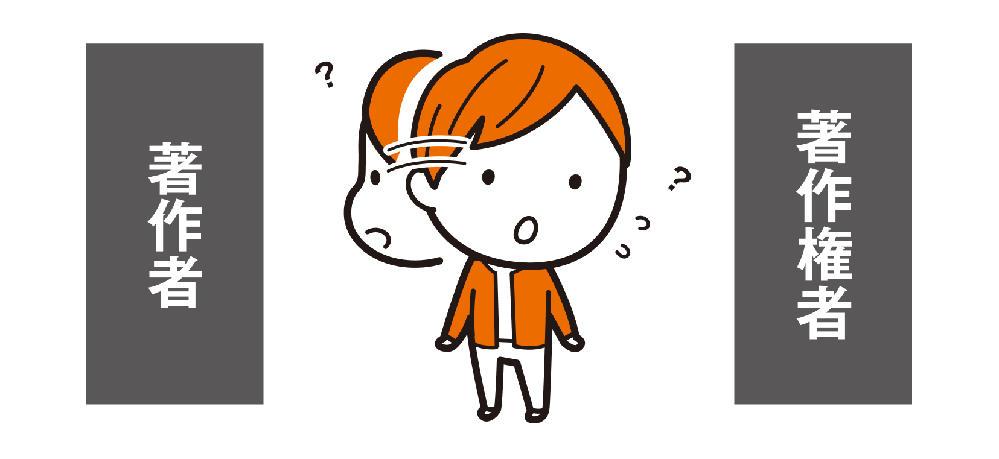

著作者の定義
著作権法の2条1項2号に、著作者について定義されています。
2条1項2号
著作者 著作物を創作する者をいう。
著作物がなにかについては、前のsectionで学びました。それらを創作する者が「著作者」となります。
著作者となるのはプロのクリエイターだけではありません。幼稚園児や小学生が、絵を描けば、その絵の著作者となります。手紙を書けば、書いた人が手紙の著作者です。もし、イラストやプログラムなどの著作物の作成を外注した場合、実際にその著作物を作成した外注先が著作者になります。
Point
著作者は著作物を創作した者であって、プロかアマチュアか、子どもか大人かは関係しない！

この前、親戚の幼稚園の子が描いた絵を写真に撮ってSNSにアップしちゃいましたけど……

幼稚園のお子さんでも著作者ですね。ただ、幼稚園のお子さんには判断できないと思いますから、保護者さんの許諾をとりましょう。

うぅ……あれは、やらかしだったんですね……すみません……
著作者と著作権者
「著作者」は著作物を創作した者で、「著作権者」は著作権を持っている者を指します。基本的に「著作者＝著作権者」になります。しかし、次のsection（section04 著作権とは）で説明しますが、財産権としての著作権は譲渡したり相続したりできるので、「著作者≠著作権者」になることもあります。著作物を利用する際に許諾を求める先は、以下のようになります。
- 著作者人格権に関すること：著作者に許諾をとる
- 著作権（財産権）に関すること：著作権者に許諾をとる
著作者人格権と著作権（財産権）については次のsectionで説明します。
職務著作（法人著作）
仕事でなにか著作物を作成した場合は、作成した個人が著作者になるのではなく会社や学校や大学などの組織が著作者になることがあります（15条）。職務著作（法人著作）となるためには、以下の条件が必要です。
- 法人等の発意に基づき作成されるものであること
- 法人等の「業務に従事する者」が創作すること
- 「職務上」の行為として創作されること
- 「公表」する場合に法人等の著作名義で公表するものであること
- 著作物の作成の時の「契約、就業規則」その他に職員を著作者とするという定めがないこと
（1）に関しては、必ずしも職場の具体的な指示がなくても最終的に職場の承認を得て作成する場合には「発意に基づき作成された」となります。また、職員がアイデアを出して作成し、職場の承諾がなくても、職務の内容から想定される限り職務上作成すれば、「発意に基づき作成された」ことになります＊1。
（2）に関しては、基本的には雇用関係のある人になります。会社の社員とか、大学の職員とかですね。派遣職員は会社と直接の雇用関係はないですが派遣先の会社等で具体的な指示を受けて働いている人なので、（2）に該当する可能性があります。
（3）に関しては、職務として作成していなければ該当しません。例えば、美術の先生が、休みの日に趣味で絵を描いたとしても、それは職場ではなくその先生が著作者となります。
（4）に関しては、大学教授の講義のように、著作名義を教授本人として公表されるものはこれにあたりません。
（5）に関しては、自分が作成した著作物の著作者を社員や職員本人とするとか著作権が社員や職員に帰属すると定めるような契約や規則があれば職務著作とはならず、作成者が著作者となります。
職務著作の場合は、法人等が「著作者」となり、「著作権者」となります（15条・17条1項）。
Memo ＊1
「法人等が著作物の作成を企画、構想し、業務に従事する者に具体的に作成を命じる場合」、「業務に従事する者が法人等の承諾を得て著作物を作成する場合」だけではなく、「法人等と業務に従事する者との間に雇用関係があり、法人等の業務計画や法人等が第三者との間で締結した契約等に従って、業務に従事する者が所定の職務を遂行している場合」には、法人等の具体的な指示や承諾がなくても、業務に従事する者の職務の遂行上、その著作物の作成が予定又は予期される限り、「法人等の発意」の要件をみたすと解されています（知財高判平成22年8月4日判タ1344号226頁〔北見工大事件〕）。

おれが大学で使う授業のために、作ったスライドも職務著作になるのか？
個別の授業で作成する場合は、公表するときも大学の名前でなくて、先生のお名前で出されますよね。「（4）『公表』する場合に法人等の著作名義で公表するものであること」が該当しないので、著作者は大院先生になると思います。

安心した。
複数名が著作者となる場合（共同著作者）
複数の人で1つの著作物を作成する場合があります＊2。例えば、1つのキャンバスに複数人が1つの絵を描くようなときです。こういうものを「共同著作物」（2条1項12号）と言います。共同著作物の著作権は、共同著作者みんなの共有になります。
そのほかに、著作権の持分を譲渡したとき、もともとの著作権者が亡くなって、その子ども二人に著作権が相続されるときなどがあります。
共有著作権では、共有者は他の共有者の合意がないと権利を行使できません（65条2項）。
65条2項の「合意」は、他の共同者は「正当な理由」がある場合でないと、反対できないこととなっています。
他の共有者が合意を妨げる「正当な理由」があると認めた裁判例として、東京地判平成12年9月28日（平成11（ワ）7209）〔経済学書籍事件〕があります。この事件では、研究者が共同で執筆した経済学の書籍について、共同執筆者Aが重版と韓国語翻訳の出版について合意を求めましたが、もうひとりの共同執筆者Bがこれを拒みました。書籍が執筆から数年経過して内容が陳腐化していることや書籍への貢献がBのほうが相当上回っていること、Aに重版や翻訳を認めなければ経済的に脅かされたり、学者としての業績に不可欠であったりするとは言えないことなどから、裁判所は「正当な理由」があると判断しています。
Memo ＊2
2条1項12号で、「二人以上の者が共同して創作した著作物であって、その各人の寄与を分離して個別的に利用することができないもの」と定義されています。